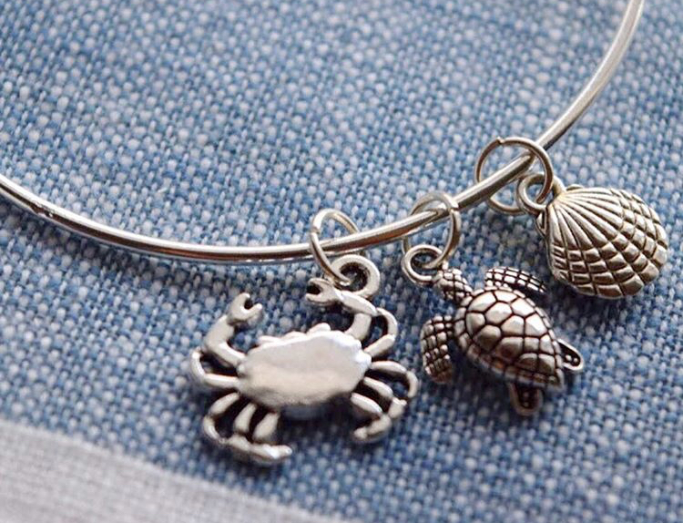
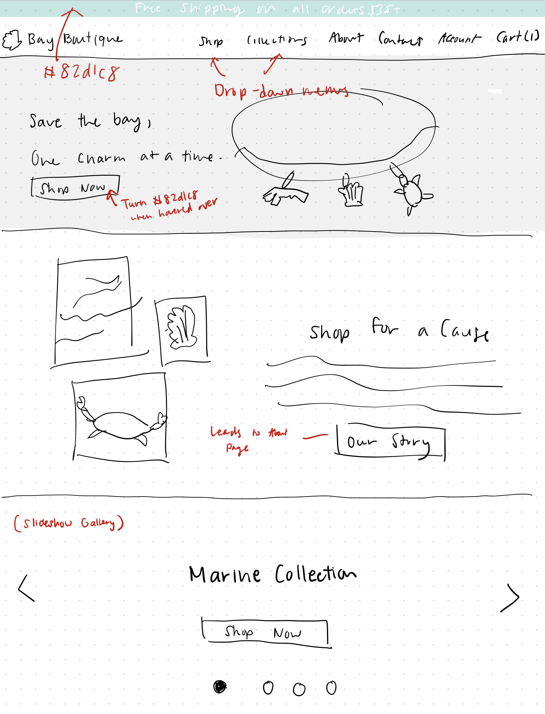
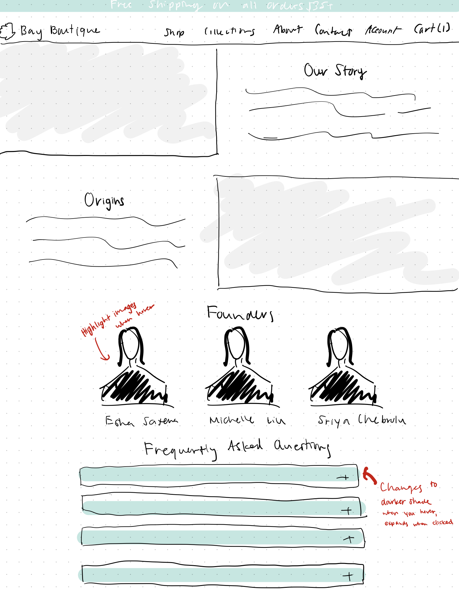
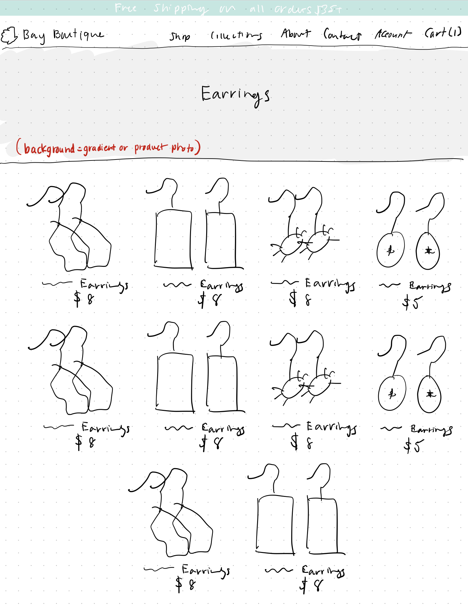
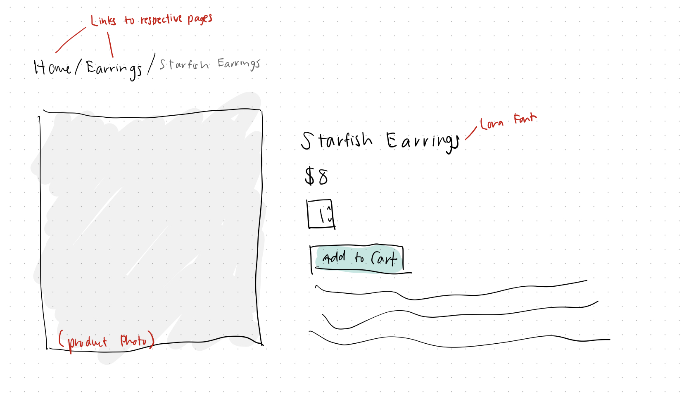
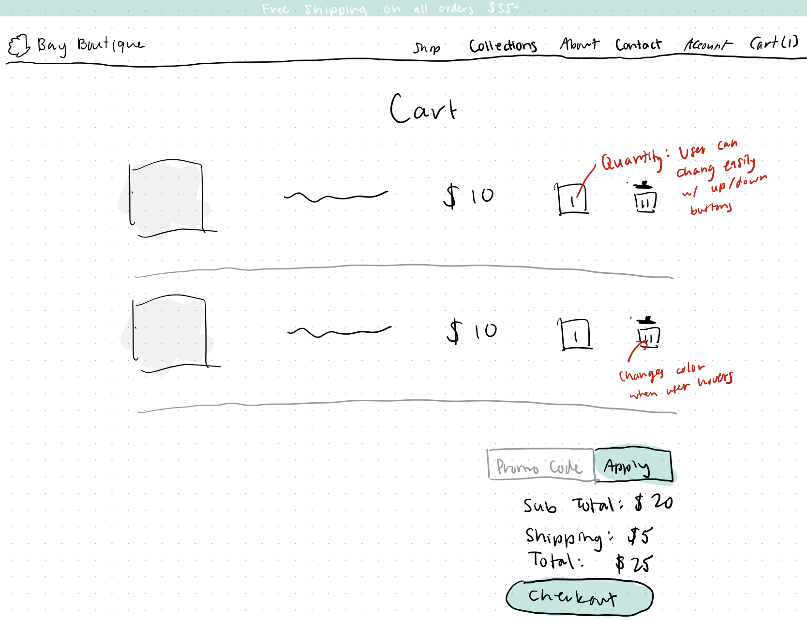
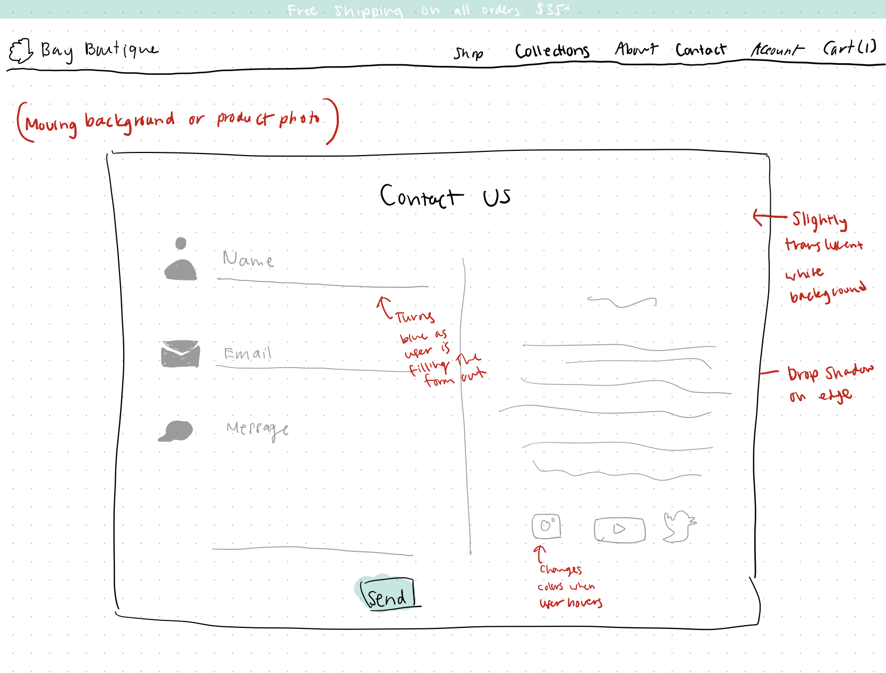
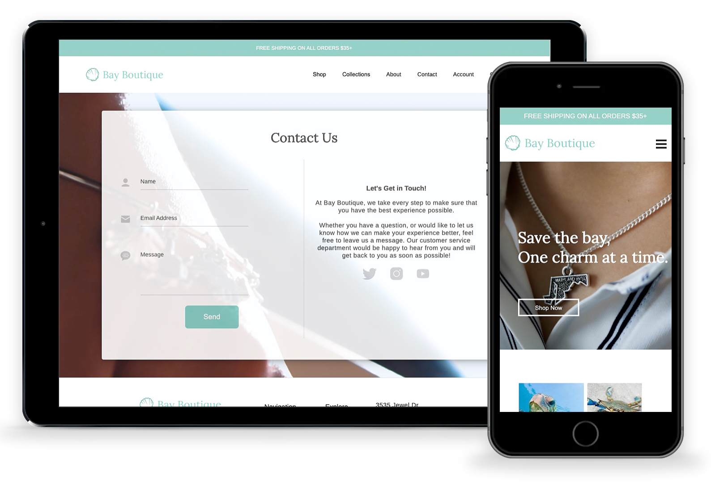

Bay Boutique
-
Charms for a cause.
> Go to website -

-
I built this website as a submission for the 2019 Future Business Leaders of America (FBLA) E-Business competition, which earned my team third place at the State Leadership Conference and qualified us to compete at the National level. The task assigned to us was to create a business that serves your local community and develop a functional e-commerce website for it. I was in charge of designing and developing the website, product branding and photography, and designing the website logos.
-
01. Overview
-

Bay Boutique is a Central Maryland-based jewelry business with designs based on various features of the Chesapeake Bay and Maryland. The Chesapeake Bay is the largest estuary in the United States, with a watershed around 70,000 square miles in 6 different states including Maryland. However, currently, 80% of the tidal bay waters are either partially or fully impaired by toxic contaminants.
As a part of our initiative to “save the Bay,” 10% of all net proceeds go to the Chesapeake Bay Foundation, a nonprofit organization created to help restore the Bay and preserve its beauty. -
02. Branding
-
Because our e-business's main product was traditionally-styled jewelry, I opted for a rustic theme.
Logo Design: For the logo, I designed a simple seashell vector reminiscent of those that can be found abundantly in the Chesapeake Bay, paired with the brand name.
Color Scheme: Inspired by the Chesapeake Bay's aquatic qualities, I chose a range of teal-blue colors, as well as a peachy pink to provide lively accents to the website.
Typography: I chose Lora as the font for the headings because of its bohemian quality and Arimo, a readable sans-serif font to contrast this, for the body.

-
03. Mockups
After deciding on the color scheme and theme, I created wireframe mockups of each page as a guideline to use when I began coding.
-

Home Page
About Page
Product Gallery
-

Product Page
Cart
Contact Page
-
04. Development
In the next stage, I used HTML, CSS, and JavaScript to make my wireframes into websites. I made sure to use responsive layouts so that the website would be viewable on all devices.
